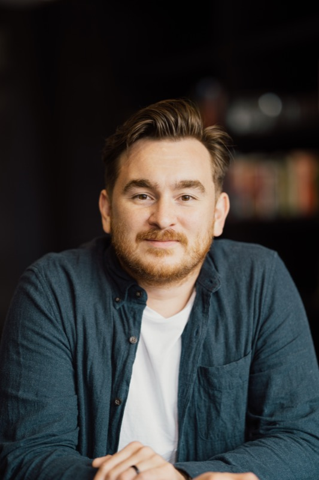

About
I'm a Senior Director of Engineering at Hinge, where I lead the Growth organization, a ~60-person cross-functional team spanning engineering, design, data, and product, working across 20+ markets.
While studying Computer Science at the University of Nottingham, I got an Android phone and started building apps, mostly things I wanted to use myself. Some of them found much bigger audiences than I expected. One, a drinking games app, crossed two million downloads on the Play Store. Another, Springdroid, caught the attention of The Meet Group, a portfolio of social applications. They acquired the app and brought me on as part of the deal. Once I graduated, I moved from the UK to the US to join them full-time.
I spent nine years at The Meet Group, starting as an Android developer and working my way up to Architect. I led multiple teams, including the live streaming engagement team. I also helped onboard engineering teams from companies we acquired, translating their systems and practices into shared standards, and coordinating Android development across the full portfolio. It's where I learned to lead engineers rather than just work alongside them.
I joined Hinge in 2020 as an Engineering Manager and today I'm a Senior Director of Engineering. My org is responsible for monetization, user acquisition and retention, and international expansion, including Hinge's subscription products, Hinge+ and HingeX. In that time, Hinge has grown into the number one dating app in markets around the world.
What I'm most proud of as a leader is growing the people who work with me. I develop managers by putting them in rooms and on problems that stretch them, and the moment I know I've done a good job is when they approach something in a way I wouldn't have. In high-growth companies, work gets harder and teams change shape constantly; that approach is how I've grown leaders who outlast the org chart.